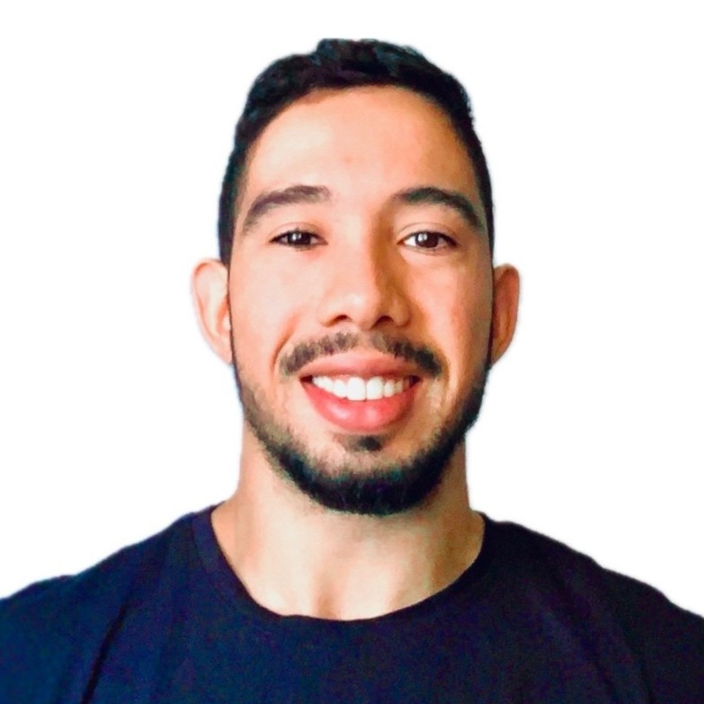
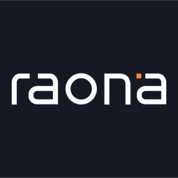
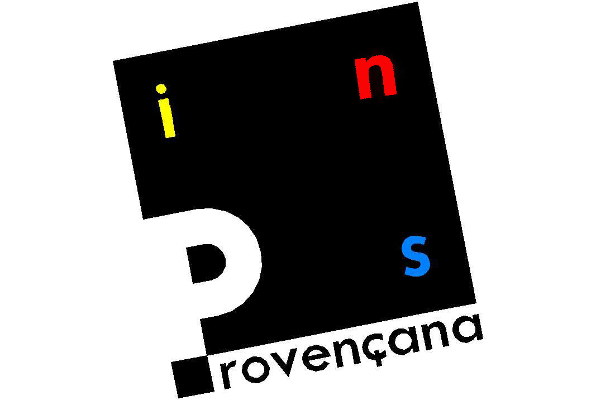
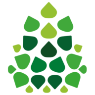

Abierto a nuevas oportunidades
Mostafa Abdel‑illah El Ansari
Backend Developer .NET, C# y Azure
Desarrollo APIs REST y microservicios con C# y ASP.NET Core sobre Microsoft Azure. Más de 3 años construyendo, manteniendo y dando soporte a sistemas en producción.


Trayectoria
Sobre mí
Soy desarrollador backend especializado en el ecosistema .NET y Microsoft Azure. Me gusta el código mantenible, bien testeado y pensado para crecer.
En Raona desarrollo funcionalidades de principio a fin: APIs y microservicios, procesos asíncronos con colas, almacenamiento en Azure y servicios de Windows para la transferencia de ficheros. También participo en el análisis y la estimación de tareas y en la resolución de incidencias en producción.
Aplico SOLID, Clean Architecture y patrones de diseño, y uso herramientas de IA como Claude y OpenAI Codex para trabajar de forma más rápida y precisa.
- Experiencia
- +3 años
- Especialidad
- Backend
- Ubicación
- Barcelona
Formación
Certificaciones

CFGS Desarrollo de Aplicaciones WebIns Provençana, 2021 – 2023
Bootcamp Java & SQLFundación Esplai, 2019Experiencia
Habilidades
También he trabajado con React, Next.js, Node.js, Express, Laravel, Java, MongoDB, Firestore, Tailwind CSS, Linux y NGINX. Pulsa una tecnología para ver dónde la he usado.
Proyectos
Lo que construyo fuera del trabajo.
¿Hablamos?
Estoy abierto a ofertas de Backend Developer .NET en Barcelona o en remoto. Escríbeme y te respondo lo antes posible.
© 2026 Mostafa Abdel-illah El Ansari.